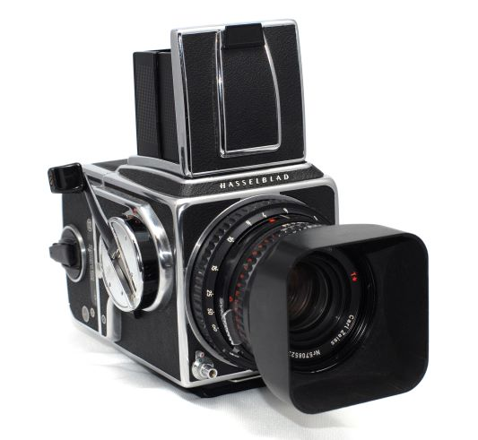
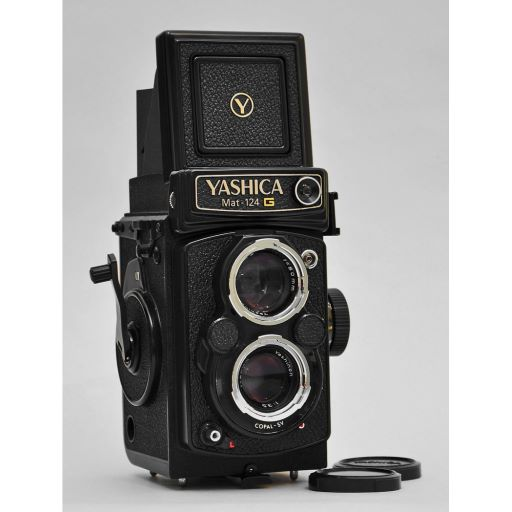
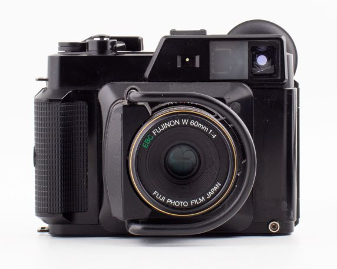
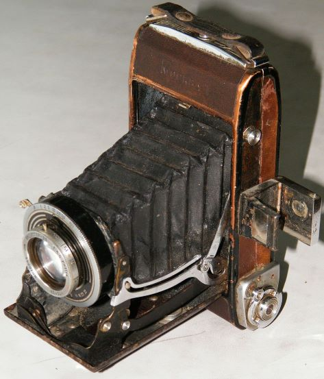

У 1957 році камеру 1000F змінила модель Hasselblad 500C без фокального затвору, замість якого були
встановлені світлозахисні стулки, що захищають фотоплівку від засвітлення при заміні об'єктива.
Для камери випущена нова лінійка «C» об'єктивів з вбудованими центральними затворами «Synchro-Compur»,
які несумісні з минулими моделями.

Камера з форматом кадру 6х6 японська компанія Yashica виготовляла з 1970 по 1986 роки. Цей фотоапарат
явно був натхненний камерою Rolleiflex 2.8F, має майже ідентичну конструкцію та розташування всіх
елементів керування та дуже схожий зовнішній вигляд. Об'єктив середньоформатної камери Yashica Mat 124G
– це чотириелементний Yashinon з фокусною відстанню 80 мм f/3,5, який створює зображення дуже гарної якості,
особливо на прикритих діафрагмах.

Фотоапарат був випущений в жовтні 1983 року. Він використовує об'єднання єктив EBC Fujion W 45 мм f/5,6,
що складається з 6 елементів. Вважалося, що камера буде доповнювати камеру 35 мм або 4x5 для зйомки на місцевості,
особливо пейзажних та гірських фотографій.

Радянський середньоформатний фотоапарат шкального типу. Перша модель із сімейства фотографічних апаратів «Москва».
Вироблявся з 1946 року по 1949 рік на Красногірському механічному заводі. Камера створена на базі фотоапарата Ikonta C 521/2
німецької фірми Zeiss Ikon. Усього було випущено 31632 штук.